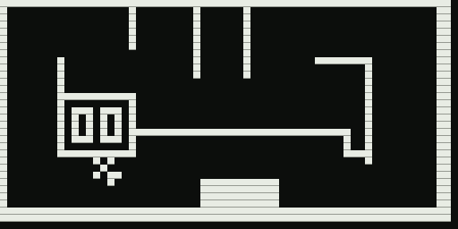

Time Trial
D. Robertson · DREAMER no. 12 (1981-08) p. 13 1K RAMjoystick


Race round a track with the joystick, completing as many laps as you can before a timer bar creeps across the top of the screen. Hitting the sides restarts from the lowest speed. Lap count is shown bottom left.
Keys
1-7 = top speed (1 fastest), then steer with Bauer's joystick.
Files
| File | Version | Load | Run |
|---|---|---|---|
| Time Trial.d68 | main | 0080-03FF | C000 |
Listing as transcribed (with notes): time_trial.txt
Source
DREAMER no. 12 on archive.org, p. 13 (PDF page 15). Author: D. Robertson.
Corrections applied
- 00C6 600E -> 600B (read on the enlarged scan).
Open doubts
- Bauer's routine is used with the Y value not halved, as published.